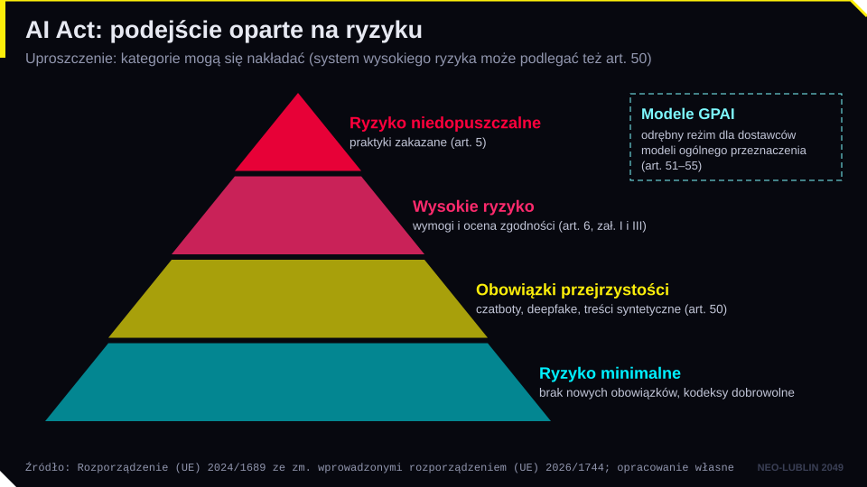
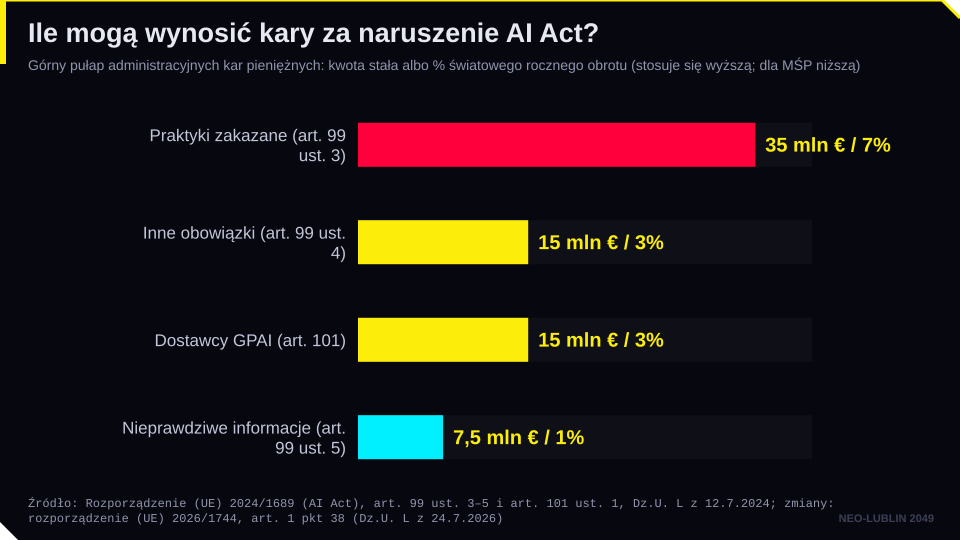
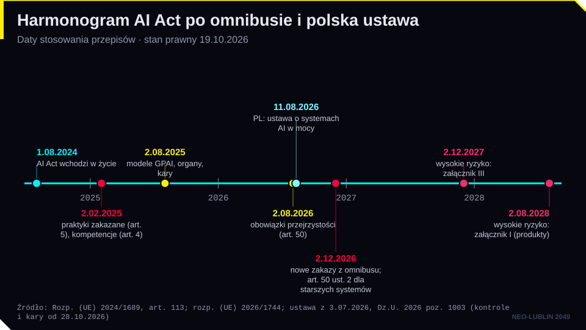
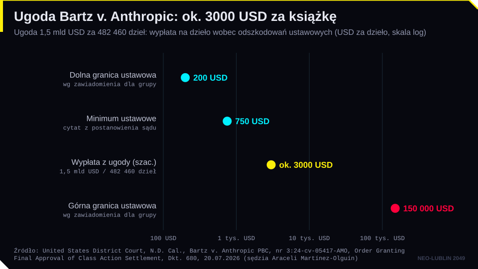

strona
EU AI Act Explorer
Pełny tekst AI Act z nawigacją po artykułach, załącznikach i motywach, także po polsku, z naniesionymi zmianami omnibusu.
Dziennik · dzielnica 07 / 10 · spotkania IV i V
Czechów: Wieża Regulatora
W wieży urzęduje komisja nadzorująca systemy AI. Zlecenie: zakwalifikuj system według AI Act i ustal, do kogo należy wytwór AI.
piątek 27.11.2026, 12:45–14:15 (spotkanie IV, część 1: AI Act i polska ustawa) · piątek 4.12.2026, 12:45–14:15 (spotkanie V, część 2: otoczenie regulacyjne i prawo autorskie) · Aula WPiA UMCS
Strzałki lub spacja przewijają slajdy, klawisz F włącza pełny ekran.
Cel modułu. Po zajęciach student potrafi:
Pytanie przewodnie. Czy obecne prawo potrafi jednocześnie chronić ludzi przed ryzykiem AI i twórców przed nieuprawnionym wykorzystaniem ich utworów, nie blokując rozwoju technologii?
Źródło i charakter. Rozporządzenie (UE) 2024/1689 z 13.06.2024 r. obowiązuje od 1.08.2024 r. Jest rozporządzeniem, więc stosuje się je bezpośrednio, bez transpozycji. Ma 113 artykułów, 13 załączników i 180 motywów. Jego logika pochodzi z prawa bezpieczeństwa produktów: ocena zgodności, oznakowanie CE, nadzór rynku. Cel (art. 1) jest jednak szerszy: rynek godnej zaufania AI i ochrona zdrowia, bezpieczeństwa oraz praw podstawowych.
Definicja systemu AI (art. 3 pkt 1) to brama do rozporządzenia. Kluczowe znamię to wnioskowanie: system na podstawie danych wejściowych sam „wnioskuje, jak generować” wyniki (predykcje, treści, zalecenia, decyzje). Program wykonujący wyłącznie reguły napisane przez człowieka nie jest systemem AI. Komisja wydała wytyczne w tej sprawie w lutym 2025 r.
Podmioty. Obowiązki zależą od roli. Dostawca (art. 3 pkt 3) rozwija system i wprowadza go do obrotu pod własną nazwą. Podmiot stosujący (art. 3 pkt 4) używa systemu w ramach swojej działalności, np. kancelaria, bank, sąd albo urząd. AI Act ma zasięg eksterytorialny (art. 2): obejmuje dostawców spoza UE, jeśli wyniki systemu są wykorzystywane w Unii. Nie stosuje się go m.in. do celów wojskowych i bezpieczeństwa narodowego, do badań naukowych ani do użytku osobistego.
Podejście oparte na ryzyku.
Kolejność pytań, od definicji po wyjątki, możesz przećwiczyć w klasyfikatorze ryzyka AI Act. Jest to narzędzie dydaktyczne, nie porada prawna. Pokazuje, w którym kroku potrzebna jest wykładnia.

Modele AI ogólnego przeznaczenia (GPAI) podlegają odrębnemu reżimowi od 2.08.2025 r. Każdy dostawca modelu musi prowadzić dokumentację techniczną, przekazywać informacje dostawcom „w dół łańcucha”, mieć politykę zgodności z prawem autorskim i publikować streszczenie danych treningowych (art. 53). Modele z ryzykiem systemowym (domniemanie przy obliczeniach treningowych powyżej 10²⁵ FLOP, art. 51) podlegają dodatkowym obowiązkom: ewaluacji, testom, zgłaszaniu poważnych incydentów i zapewnieniu cyberbezpieczeństwa (art. 55). Kodeks praktyk GPAI z 10.07.2025 r. pomaga wykazać zgodność.
Kary (art. 99): za praktyki zakazane do 35 mln euro lub 7% światowego obrotu, za inne naruszenia do 15 mln euro lub 3%, za nieprawdziwe informacje do 7,5 mln euro lub 1%. Dostawców modeli GPAI karze Komisja (art. 101, do 15 mln euro lub 3%). Nadzór sprawują: Urząd ds. AI w Komisji (modele GPAI, a po omnibusie także systemy zbudowane na modelu tego samego dostawcy i systemy w bardzo dużych platformach), Europejska Rada ds. AI oraz organy krajowe.

Rozporządzenie (UE) 2026/1744 z 8.07.2026 r. (tzw. omnibus cyfrowy dotyczący AI) weszło w życie 27.07.2026 r. Najważniejsze zmiany:
| Termin | Co się stosuje |
|---|---|
| 2.02.2025 | zakazy (art. 5), kompetencje w zakresie AI (art. 4) |
| 2.08.2025 | obowiązki dostawców modeli GPAI, przepisy o organach i karach |
| 2.08.2026 | przejrzystość (art. 50) i większość pozostałych przepisów |
| 2.12.2026 | nowe zakazy z art. 5; art. 50 ust. 2 dla systemów wprowadzonych przed 2.08.2026 |
| 2.12.2027 | systemy wysokiego ryzyka z zał. III |
| 2.08.2028 | systemy wysokiego ryzyka z zał. I (produkty) |
Omnibus złagodził też art. 4: dostawcy i podmioty stosujące mają obecnie wspierać rozwój kompetencji w zakresie AI, zamiast je zapewniać. Dodał art. 4a o przetwarzaniu szczególnych kategorii danych osobowych w celu wykrywania stronniczości, wprowadził ułatwienia dla MŚP i małych spółek o średniej kapitalizacji oraz unijną piaskownicę regulacyjną. Nie zmienił progów kar, obowiązków z art. 50 ani obowiązków dostawców GPAI. Dyskusja o tym, czy odroczenie to realizm, czy deregulacja, łączy się z wątkiem kotwic regulacyjnych ze spotkania 6.

Ustawa (Dz.U. 2026 poz. 1003) nie powtarza AI Act. Wyznacza organy i procedury, których rozporządzenie wymaga od państw członkowskich. Ma 127 artykułów w 10 rozdziałach. Co do zasady obowiązuje od 11.08.2026 r. Przepisy egzekucyjne (kontrola, postępowanie, układ, kary) oraz opinie indywidualne stosuje się od 28.10.2026 r.
Komisja Rozwoju i Bezpieczeństwa Sztucznej Inteligencji (KRiBSI) jest organem nadzoru rynku i pojedynczym punktem kontaktowym (art. 5). Tworzą ją Przewodniczący, dwóch Zastępców i czterech członków wskazanych przez Prezesa UOKiK, KNF, KRRiT i Prezesa UKE (art. 19). Przewodniczącego powołuje Sejm za zgodą Senatu na pięcioletnią kadencję. Obsługę zapewnia urząd ministra właściwego do spraw informatyzacji. Przy Komisji działa Społeczna Rada do spraw Sztucznej Inteligencji, w której zasiadają m.in. przedstawiciele organizacji społecznych i nauki.
Kontrola i postępowanie. Kontrola jest co do zasady zdalna i zapowiadana co najmniej 7 dni wcześniej. Przy ryzyku dla życia, zdrowia lub praw podstawowych możliwa jest kontrola na miejscu, także bez uprzedzenia. Każdy może złożyć skargę na naruszenie AI Act (art. 59). Komisja może wydać ostrzeżenie, decyzję o naruszeniu, a przy bezpośrednim ryzyku nakazać wycofanie systemu, nawet z rygorem natychmiastowej wykonalności (art. 61–63). Odwołanie przysługuje do Sądu Ochrony Konkurencji i Konsumentów (art. 65), a nie do sądu administracyjnego.
Sankcje. Wysokość kar wynika z art. 99 AI Act. Ustawa przewiduje ich obniżenie, jeśli podmiot wykona ostrzeżenie, zawrze układ z Komisją (o 20–70%) albo sam zgłosi naruszenie (o 30–90%). Utrudnianie kontroli jest przestępstwem.
Wsparcie innowacji. Za opłatą 150 zł można uzyskać opinię indywidualną, która wiąże organy, a zastosowanie się do niej nie może szkodzić (podobnie jak interpretacja podatkowa). KRiBSI ustanawia też piaskownice regulacyjne, w drodze decyzji i po konkursie, na 6–12 miesięcy; dla MŚP udział jest bezpłatny.
Konwencja ramowa Rady Europy o sztucznej inteligencji i prawach człowieka, demokracji i praworządności (CETS nr 225) została otwarta do podpisu 5.09.2024 r. w Wilnie. To pierwsza wiążąca umowa międzynarodowa o AI. Podpisały ją także państwa spoza Rady Europy, m.in. USA, Kanada, Japonia i Izrael. Konwencja formułuje zasady (godność, przejrzystość, rozliczalność, równość, prywatność, rzetelność) i wymaga skutecznych środków ochrony prawnej. Wiąże przede wszystkim sektor publiczny, a wobec prywatnego strony same wybierają sposób wykonania. UE zawarła konwencję w 2026 r. (decyzja Rady 2026/1080), ale konwencja jeszcze nie weszła w życie (stan na 19.10.2026 r.). W UE wykonuje ją przede wszystkim AI Act.
DSA (rozp. 2022/2065, stosowane w pełni od 17.02.2024 r.) reguluje platformy internetowe. Bardzo duże platformy i wyszukiwarki muszą oceniać i ograniczać ryzyka systemowe (art. 34–35), w tym oznaczać wygenerowane lub zmanipulowane obrazy i nagrania (art. 35 ust. 1 lit. k). W sierpniu 2026 r. Komisja wyznaczyła ChatGPT jako bardzo dużą wyszukiwarkę. W Polsce koordynatorem ds. usług cyfrowych jest Prezes UKE (ustawa z 4.09.2026 r.).
DMA (rozp. 2022/1925, stosowane od 2.05.2023 r.) nakłada obowiązki na strażników dostępu, czyli największe platformy. AI jest nowym polem rywalizacji (asystenci w systemach operacyjnych, wyszukiwarkach i chmurze), a Komisja bada m.in. rynek usług chmurowych.
Prawo autorskie zadaje dwa pytania: o wejście (czy wolno trenować model na cudzych utworach?) i o wyjście (czy wytwór AI jest utworem i czy narusza cudze prawa?).
Wytwór AI a utwór. Według art. 1 ust. 1 pr. aut. utworem jest przejaw działalności twórczej o indywidualnym charakterze. Twórcą może być tylko człowiek. TSUE wymaga, by utwór był „własną twórczością intelektualną autora”, odzwierciedlającą jego swobodne i twórcze wybory (C-5/08 Infopaq, C-145/10 Painer, C-683/17 Cofemel). W USA sprawę rozstrzygnął wyrok Thaler v. Perlmutter (D.C. Cir., 18.03.2025 r.): prawo autorskie wymaga ludzkiego autorstwa, więc maszyna nie może być autorem. Sąd Najwyższy USA odmówił rozpoznania skargi (2.03.2026 r.). US Copyright Office uznaje, że wynik może być chroniony, gdy człowiek określa elementy ekspresji, ale same prompty zwykle nie wystarczają. Inaczej orzekł w 2023 r. Pekiński Sąd Internetowy, który uznał ochronę obrazu wygenerowanego po wielu twórczych wyborach użytkownika. W Polsce wytwór bez twórczego wkładu człowieka nie jest utworem. Chronione mogą być natomiast twórcze opracowanie, wybór i układ oraz zmiany wprowadzone przez człowieka.
Eksploracja tekstów i danych (TDM). Dyrektywa 2019/790 przewiduje dwa wyjątki. Art. 3 dotyczy badań naukowych prowadzonych przez organizacje badawcze i instytucje dziedzictwa kulturowego. Art. 4 dotyczy dowolnych celów, także komercyjnych, ale uprawniony może się zastrzec (opt-out). Przy treściach w internecie zastrzeżenie wyraża się środkami nadającymi się do odczytu maszynowego. W Polsce wyjątki wprowadziła nowelizacja z 26.07.2024 r. (Dz.U. 2024 poz. 1254, w mocy od 20.09.2024 r.). Według art. 26³ ust. 1 pr. aut. „wolno zwielokrotniać rozpowszechnione utwory w celu eksploracji tekstów i danych, chyba że uprawniony zastrzegł inaczej”. Zastrzeżenie musi być wyraźne i odpowiednie do sposobu udostępnienia utworu, a w internecie wyrażone w formacie do odczytu maszynowego. Projekt wyłączający z wyjątku generatywną AI porzucono.
AI Act jako most. Dostawca modelu GPAI musi respektować zastrzeżenia z art. 4 ust. 3 dyrektywy i opublikować streszczenie danych treningowych według wzoru Komisji z 24.07.2025 r. (art. 53 ust. 1 lit. c i d). Obowiązek dotyczy każdego modelu wprowadzanego do obrotu w UE, niezależnie od miejsca treningu (motyw 106).
Najważniejsze spory (stan na 19.10.2026 r.):

UE i USA różnią się metodą. W UE decydują wyjątki ustawowe, zastrzeżenie uprawnionego i obowiązki przejrzystości. W USA decyduje klauzula fair use, oceniana przez sąd po fakcie. W obu systemach coraz ważniejsze staje się pytanie, skąd pochodzą dane i czy model zapamiętuje utwory.
| Pojęcie | Definicja robocza |
|---|---|
| System AI | system maszynowy działający z pewną autonomią, który wnioskuje, jak generować wyniki z danych wejściowych (art. 3 pkt 1 AI Act) |
| Dostawca | podmiot, który rozwija system lub model AI i wprowadza go do obrotu pod własną nazwą (art. 3 pkt 3) |
| Podmiot stosujący | podmiot, który używa systemu AI w ramach swojej działalności (art. 3 pkt 4) |
| Praktyka zakazana | zastosowanie AI o nieakceptowalnym ryzyku wymienione w art. 5 |
| System wysokiego ryzyka | system z art. 6 ust. 1 (zał. I) lub ust. 2 (zał. III), objęty wymogami z art. 8–15 |
| Model GPAI | model o znacznej ogólności, zdolny do wykonywania szerokiego zakresu zadań (art. 3 pkt 63) |
| Ryzyko systemowe | ryzyko właściwe najbardziej zaawansowanym modelom GPAI; domniemanie powyżej 10²⁵ FLOP (art. 51) |
| Omnibus cyfrowy | rozporządzenie (UE) 2026/1744 upraszczające i odraczające część AI Act |
| KRiBSI | Komisja Rozwoju i Bezpieczeństwa Sztucznej Inteligencji, polski organ nadzoru rynku AI |
| Opinia indywidualna | wiążące stanowisko KRiBSI w sprawie stosowania przepisów do konkretnego stanu faktycznego |
| Piaskownica regulacyjna | kontrolowane środowisko testowania innowacyjnych systemów AI pod nadzorem organu |
| TDM | eksploracja tekstów i danych: zautomatyzowana analiza treści cyfrowych w celu wykrycia wzorców |
| Opt-out | zastrzeżenie uprawnionego wyłączające jego utwory z eksploracji tekstów i danych (art. 4 ust. 3 dyrektywy 2019/790, art. 26³ pr. aut.) |
| Fair use | amerykańska klauzula dozwolonego użytku oceniana przez sąd na podstawie czterech czynników |
Stan prawny i dane liczbowe sprawdzono 19–22.10.2026. Teksty rozporządzeń 2024/1689 i 2026/1744 sprawdzono w polskiej wersji urzędowej (EUR-Lex), ustawę z 3.07.2026 r. w Dzienniku Ustaw. Stan spraw sądowych opisano według orzeczeń i komunikatów sądów, a gdy ich brakowało, według relacji prasowych; może się zmienić.
strona
Pełny tekst AI Act z nawigacją po artykułach, załącznikach i motywach, także po polsku, z naniesionymi zmianami omnibusu.
książka
Trzy modele regulacji technologii: amerykański rynkowy, chiński państwowy i europejski oparty na prawach. Tło dla AI Act.
strona
Trzy części raportu o AI i prawie autorskim: deepfake, zdolność do ochrony, trenowanie modeli.
strona
Aktualna lista sporów sądowych o AI na świecie, z podziałem na prawo autorskie, prywatność i inne.
podcast
Miejsce na polski podcast lub webinar o AI Act i ustawie z 3.07.2026 [do uzupełnienia].
Polecenie. Poproś dowolny model językowy o:
Następnie zapytaj ten sam model: „Na jakich danych cię trenowano? Czy twój dostawca opublikował streszczenie danych treningowych zgodnie z art. 53 ust. 1 lit. d AI Act?”.
Co obserwujemy.
Pytania do refleksji.
Stan faktyczny. Polska spółka LexMachina sp. z o.o. (zatrudnia 60 osób) opracowała system „SędziaAsystent”. System działa na modelu GPAI dużego dostawcy amerykańskiego, dostępnym przez API, i ma trzy funkcje:
Ministerstwo Sprawiedliwości zawarło z LexMachina umowę i od 1.03.2027 r. wdraża system w pięciu sądach rejonowych. Prezes jednego z sądów polecił sędziom „korzystać z projektu uzasadnienia, o ile nie budzi zastrzeżeń”. Szkolenia nie przeprowadzono. W kwietniu 2027 r. adwokat jednej ze stron zauważa, że uzasadnienie wyroku cytuje nieistniejącą uchwałę Sądu Najwyższego. Składa skargę do KRiBSI.
Pytania.
Wskazówki do rozwiązania (dla prowadzącego).
Quiz samosprawdzający. Najlepszy wynik zapisuje się tylko w tej przeglądarce (karta wyników na stronie głównej) i liczy się do aktywności; nic nie jest wysyłane. Pytania z quizu nie pojawiają się na teście zaliczeniowym.
Narzędzie dydaktyczne krok po kroku: definicja systemu AI, wyłączenia, praktyki zakazane, zał. I i III z wyjątkiem z art. 6 ust. 3, obowiązki z art. 50, modele GPAI. Wynik z podstawą prawną i datą stosowania po omnibusie 2026/1744.